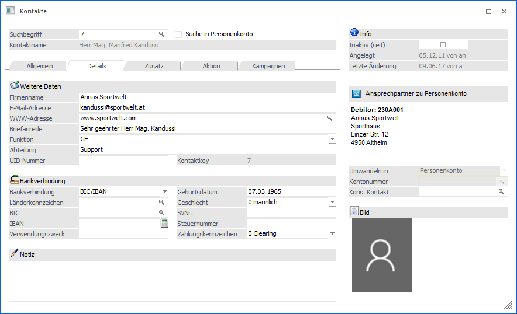
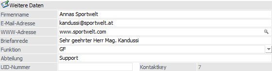
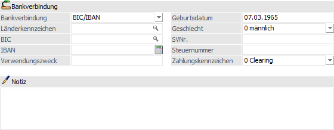

Im Register "Details" können zusätzliche Informationen für den Kontakt hinterlegt werden.

Weitere Daten

Ø Firmenname
Hier kann ein Firmenname angegeben werden, z.B. im Falle eines "freien" Kontaktes.
Ø E-Mail-Adresse
Wird hier eine E-Mail-Adresse hinterlegt (max. 100 Zeichen), so können damit verschiedene Aktionen durchgeführt werden (direkter Mailversand etc.).
Hinweis
Nach Eingabe der Mailadresse erfolgt eine Prüfung ob…
ü die Adresse aus mindestens 5 Zeichen besteht.
ü das "@"-Zeichen und ein "." (der Punkt muss nach dem "@" sein) vorkommen.
ü mindestens 1 Zeichen vor dem "@", zwischen dem "@" und dem ".", und nach dem "." ist.
Werden diese Kriterien nicht erfüllt, so wird dies mit einer entsprechenden Meldung angezeigt; die Mailadresse kann jedoch trotzdem gespeichert werden.
Ø WWW-Adresse
Eingabe der Internetadresse des "Kontakts". Durch Anklicken der Lupe neben der Internetadresse wird der Internet-Browser aufgerufen und es wird direkt der hinterlegte Link geöffnet.
Ø Briefanrede
Eingabe der kompletten Anrede, die bei einem Schriftverkehr verwendet werden soll (z.B. "Sehr geehrter Herr Stransky"). Diese wird bei Änderung von Adressdaten automatisch ausgefüllt, wobei es 3 unterschiedliche Formen gibt:
ü Sehr geehrter Herr + Titel +
Name
Wird verwendet, wenn in der Anrede Herr steht.
ü Sehr geehrte Frau+ Titel +
Name
Wird verwendet, wenn in der Anrede Frau steht.
ü Sehr geehrte Damen und
Herren
Wird verwendet, wenn in der Anrede Firma steht, oder die Anrede leer
bleibt.
Ø Funktion
Hier kann die Funktion des Kontakts hinterlegt werden. Ist eine Funktion noch nicht vorhanden, so wird diese durch das Eintragen in das Feld "Funktion" automatisch angelegt.
Hinweis
Sobald eine Funktion in keinem Kontakt mehr zugeordnet ist, so wird diese automatisch gelöscht und steht somit auch im Feld "Funktion" nicht mehr zur Verfügung.
Ø Abteilung
Hier kann eine Abteilung angegeben werden, für die oder zu der der jeweilige Kontakt zugehörig ist.
Ø UID-Nummer
Eingabe der UID-Nummer, sofern diese bekannt ist.
Ø Kontaktkey
An dieser Stelle wird der interne Kontaktkey ausgewiesen.
Bankverbindung / Notiz

Ø Bankverbindung
An dieser Stelle kann definiert werden, ob nachfolgende BIC + IBAN oder Bankleitzahl + Kontonummer erfasst werden sollen.
Ø Länderkennzeichen
An dieser Stelle wird das Länderkennzeichen der Bankverbindung angegeben.
Ø BLZ
Eingabe der Bankleitzahl. Durch Drücken der F9-Taste kann nach allen bereits angelegten Bankleitzahlen gesucht werden.
Ø Kontonummer
Eingabe der Bankkontonummer des Kontakts.
Ø BIC
Der BIC kann über die BLZ geladen werden oder kann über den Matchcode F9-Taste gesucht werden. Die Eingabe des BICs ist auf 11 Stellen begrenzt.
Ø IBAN
Hier kann die IBAN (international bank account number) eingetragen werden. Die IBAN ist eine eindeutige Kombination aus Länderkennzeichen, Bankleitzahl und Kontonummer. Wird die Eingabe bestätigt, erfolgt auch eine Plausibilitätsprüfung - ist die IBAN nicht richtig, wird ein entsprechender Hinweis angezeigt. Die IBAN ist im Auslandszahlungsverkehr "zwingend" vorgeschrieben, da sich sonst die Kosten für die Überweisungen erhöhen.
Ø Verwendungszweck
Für einen automatischen Zahlungsverkehr kann hier ein Verwendungszweck hinterlegt werden (wird derzeit noch nicht unterstützt).
Ø Geburtsdatum
An dieser Stelle kann das Geburtsdatum des Kontakts hinterlegt werden.
Ø Geschlecht
Das Geschlecht wird automatisch aus der Anrede (Herr oder Frau) gebildet. Wenn keine Anrede eingetragen wird oder etwas anderes wie "Herr" oder "Frau" verwendet wird, so wird das Geschlecht mit "allgemein" vorgesetzt.
Ø SVNr.
Eingabe der Sozialversicherungsnummer
Ø Steuernummer
Eingabe der Steuernummer
Ø Zahlungskennzeichen
Aus der Auswahlbox kann die Zahlungsart ausgewählt werden, mit welcher die Auszahlung erfolgen soll. Hierbei stehen folgende Optionen zur Verfügung:
ü 0 - Clearing
Erstellung einer
elektronischen Überweisung
ü 1 - Scheck
Ausdruck eines
Verrechnungsschecks
ü 2 - Überweisung
Ausdruck einer
Überweisung
ü 3 - Bar
Barauszahlung
ü 4 - Bankeinzug
Erstellung eines
Bankeinzugs
Ø Notiz
Hier kann eine beliebige Notiz hinterlegt werden, wobei auch Formatierungsanweisungen möglich sind. Die Notiz wird im RTF-Format gespeichert.